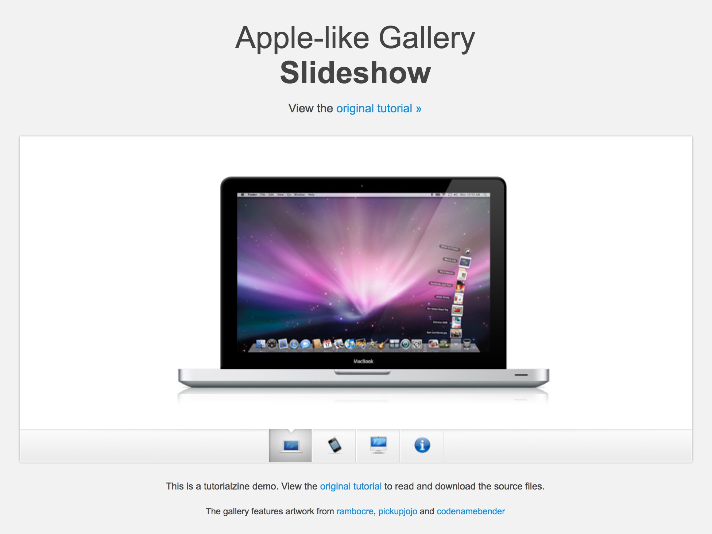

RS
card
关于
技能
作品
作品1
作品2
作品3
博客
博客1
博客2
博客3
日历
联系方式
其他
Hello
黄笑
前端开发工程师
年龄
18
所在城市
北京
邮箱
huangxiao233@gmail.com
手机
18811395195
下载 PDF 简历
黄笑， 资深前端工程师，资深前端讲师，现在在 北京科技大学 学习前端。
技能：前端开发，Rails 开发，Node.js 开发
技能
HTML 5 & CSS 3
JavaScript
jQuery
Vue
React
HTTP
留言
姓名
内容
作品集
